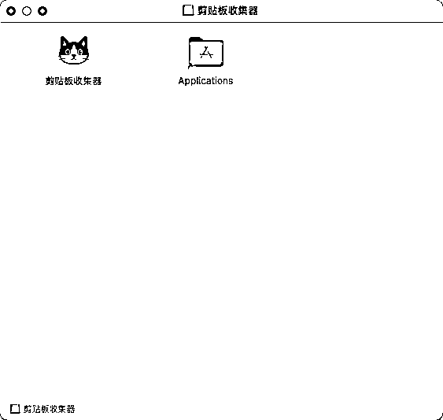
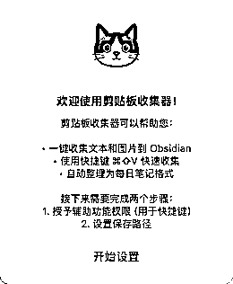
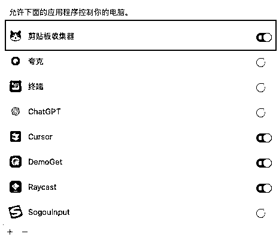
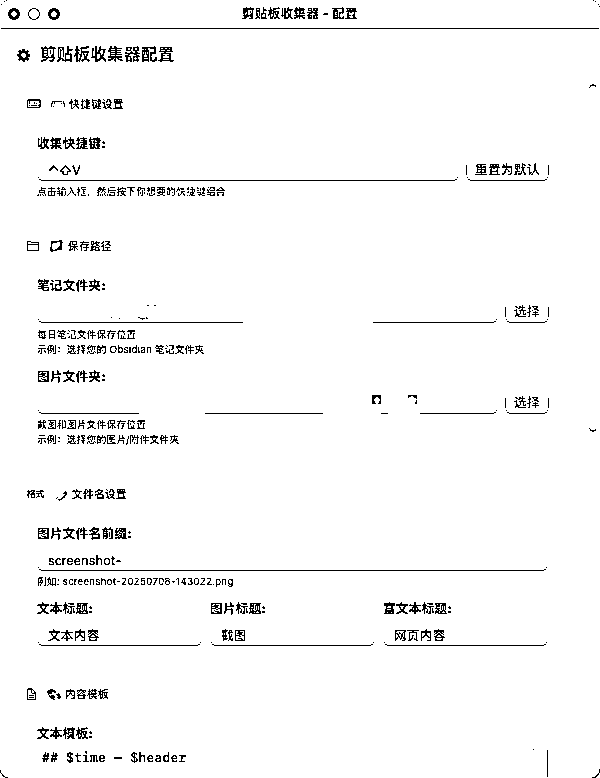

来源：https://y9gfdw7i2i.feishu.cn/docx/CheodqFMPonyTExDUSDcuUsvnmb
为了节约几秒钟，我花了两晚开发工具。
和其他圈友一样，我每天要看大量的图文信息，经常会遇到一些想要保存的金句或者教程，但是我很讨厌“复制内容→切换到笔记软件→新建笔记保存→切换回内容”这么一个繁琐的流程。所以我想做一个小功能，可以一键直接保存我复制的内容。
起初，我想用苹果的捷径来实现类似的功能，但很快发现mac mini的捷径支持版本较旧，对微信聊天记录和富文本格式的支持非常有限。我就决定自己上手，指挥claude code开发了一个小工具，可以把我复制的内容直接保存到obsidian笔记。
ClipboardCollector的核心理念是 “不用切换，一键保存”：
用简单的截图来展示 ClipboardCollector 的使用体验：
step1：安装
还是常规的安装方法，打开dmg文件，把图标拖到文件夹里。

step2：配置信息
初次打开app，会直接跳出新手引导界面，照着操作即可。

这里面比较重要的是授予辅助功能权限，否则没办法触发快捷键。不用担心应用会搞什么其他的破坏，这个app根本没有联网功能和删除功能。按照引导来到这个界面，把后面的按钮点亮即可。

然后到快捷键和路径配置界面，配置好你想用的快捷键和想保存文件和图片的路径就可以了，下拉界面到最下方，选择保存即可。

需要说明的是，app初始是按照obsidian笔记的语法设计的，如果用普通的md阅读器阅读，文本可以照常阅读，但是图片是打不开的。
不过图片本身也是保存在了本地，找AI写一个语法转换的脚本就可以处理了。或者更简单的办法，安装obsidian即可。
ClipboardCollector 已开源，并提供免费下载使用，欢迎体验并分享你的意见。新手上路，还请轻喷：